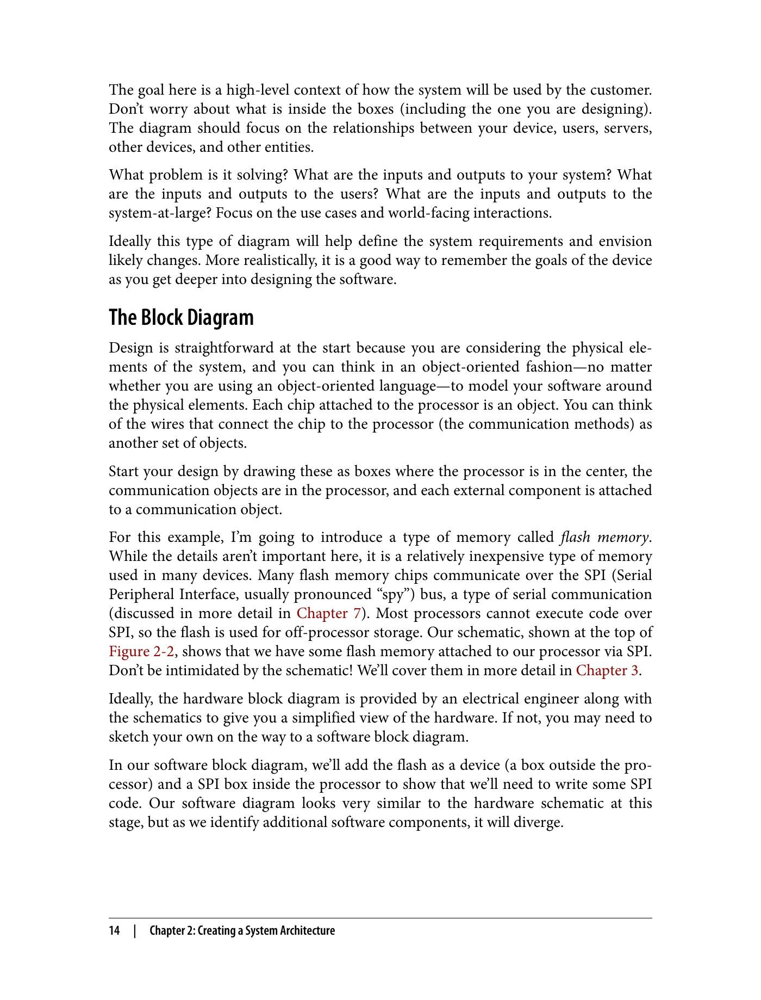
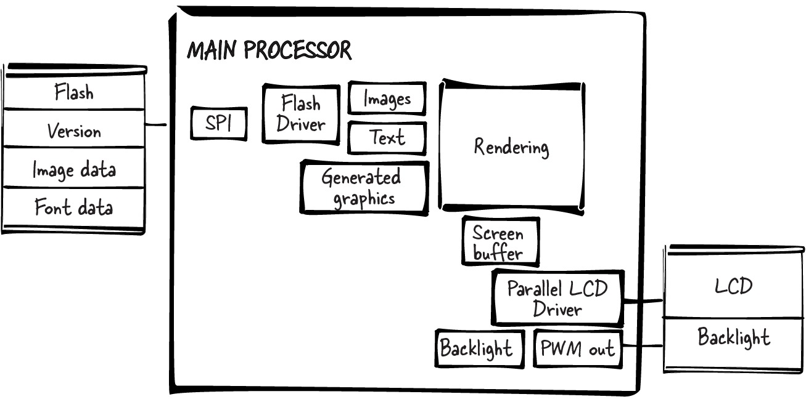
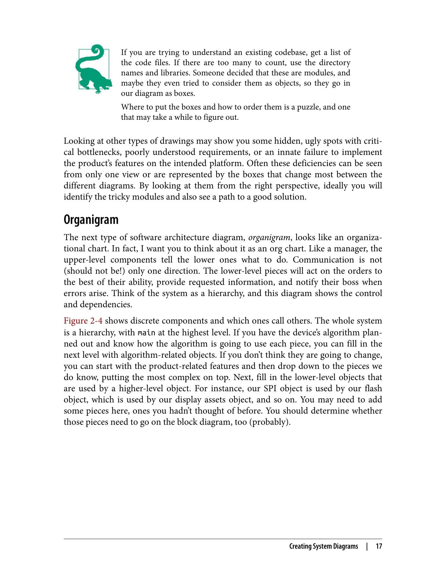
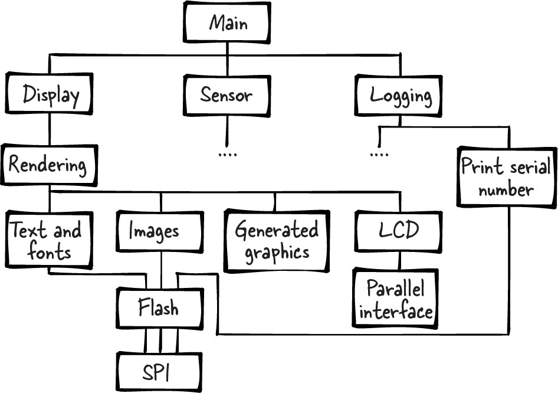
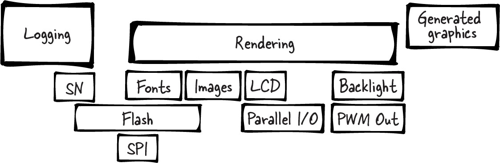
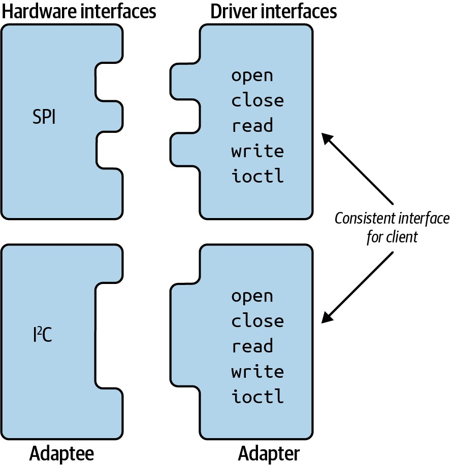
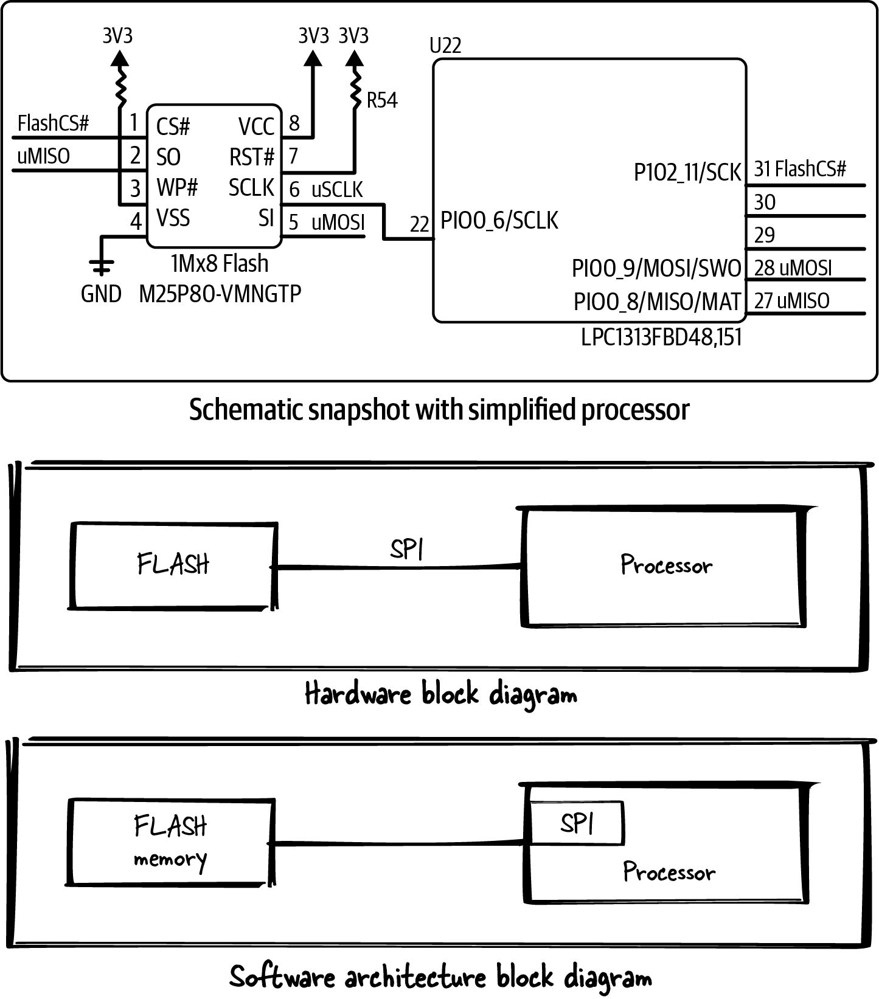
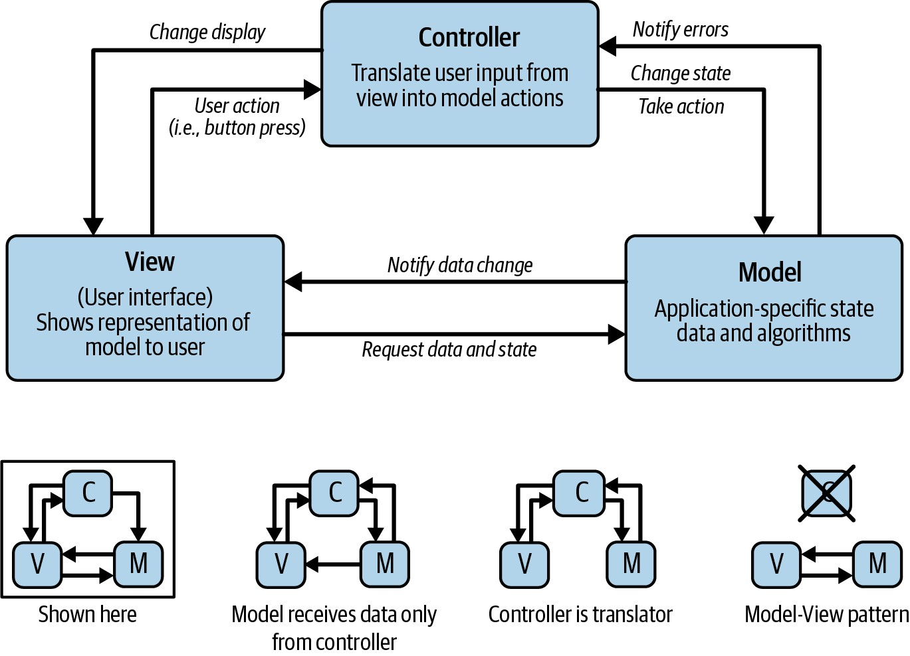
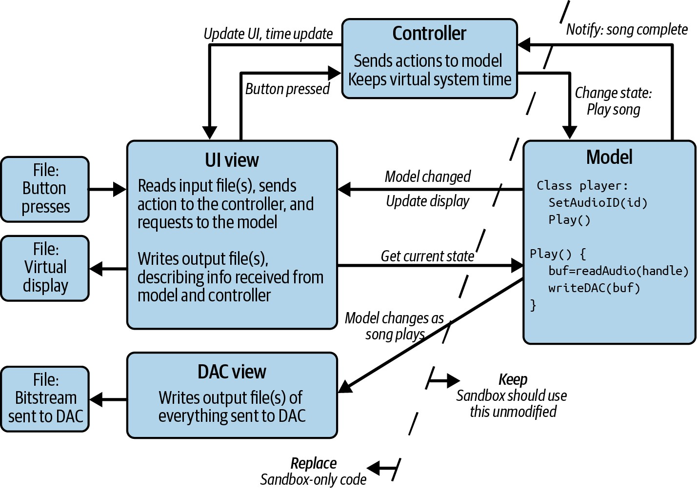

第2章 创建系统架构
Making Embedded Systems — Elecia White 著 | AI 辅助翻译
即使是小型嵌入式系统也有如此多的细节，以至于很难识别出在哪里可以应用模式。你需要对整个系统有一个良好的视图，才能理解哪些部分有直接的解决方案，哪些部分有隐藏的依赖关系。好的设计是从一个尚可的设计开始，然后对其加以改进——理想情况下是在开始实现它之前。而系统架构图是查看系统和开始设计软件（或理解交到你手上的那堆代码）的好方法。
产品定义在开始时很少是固定的，所以你可能会反复推敲各种想法。一旦产品功能在白板上勾勒出来，你就可以开始考虑软件架构了。硬件团队也在做同样的事情。很快，你就会有一个软件架构和一个草稿原理图。根据你的经验水平，你设计的前几个项目很可能是基于其他项目的，所以硬件将基于现有平台并做一些改动。
在本章中，我们将探讨查看系统的不同方式，以便设计出更好的嵌入式软件。我们将创建一些图表来描述我们的系统是什么样子，并确定我们应该如何架构我们的软件。这些图表的目标是找到将软件架构得能够适应不断变化的需求和硬件的方法：封装、信息隐藏、模块之间拥有良好的接口，等等。
嵌入式系统严重依赖其硬件。不稳定的硬件会让软件看起来充满了 bug 且不可靠。确保我们能够将硬件中的任何变化与软件中的 bug 分开——这是开始的地方。
另一种方式也是可能的（而且通常更可取），即先查看系统功能，然后确定需要什么样的硬件来支持它们。然而，我将主要从底层、与硬件接口的软件开始讲起，以强化这样一种观念：你的产品依赖于硬件特性是否稳定和可访问。当你做自底向上的设计时，要认识到你所指定的硬件是原型性的——最初可以接受存在某种能满足你要求的硬件，用它来规划系统、软件和硬件架构，然后再深入细节。
入门
架构系统有两种方式。一种是从一张白纸开始，有一个想法或最终目标，但没有任何现有的东西——这是组合法（composition）。从零开始创建这些系统图可能让人望而生畏，空白页看起来浩瀚无边。
另一种方式是从现有产品出发推导出架构，理解别人已经搭建好的东西的内部结构——这样的逆向工程是分解法（decomposition），将事物分解为更小的部分。当你加入一个团队时，有时你从一开始就面对一个紧迫的截止日期、一堆代码和非常少的文档，而且没有时间写更多文档。
图表将帮助你理解系统。你看到整体结构的能力将帮助你以保持正轨的方式编写你负责的那部分系统，交付高质量的代码并按时完成。你可能需要考虑制定两个架构图：一个是针对你正在编写的代码的局部图，另一个是描述整个产品的全局图，以便你看到你的部分是如何融入的。
随着理解的加深，你的图表会越来越大。如果图太复杂，把一些方框打包成一个方框，然后在另一张图上展开它们。有些系统会更适合某一种图；这取决于原始架构师是如何思考他们所做的东西的。
我把它们展示为草图，因为这就是我希望你做的。不同的图是从不同角度查看系统以及思考它如何被构建的方式。我们不是在创建系统文档；相反，这些草图是一种从不同视角思考系统的方式。让你的草图保持足够凌乱，这样如果你不得不全部重来一遍，也不会让你想放弃。铅笔和纸是我个人最喜欢的方法——它让我专注于信息本身，而不是绘图方法。
创建系统图
正如硬件设计师创建原理图一样，你应该制作一系列显示软件各部分之间关系的图。这样的图将让你看到整个系统的全貌，帮助你识别依赖关系，并为新功能的设计提供洞察。我推荐四种类型的图：环境图、框图、组织图和分层图。
环境图
第一张图是你的系统如何融入整个外部世界的概览。如果它是一个儿童玩具，这张图可能很简单：一个简笔画人物和玩具上的一些按钮。如果它是一个向地震传感器网络提供信息并额外向当地科学家输出的设备，那么这个系统就更复杂，超出了你正在开发的那一部分。见图 2-1。

图 2-1 — 两张复杂程度不同的环境图
这里的目标是了解系统将如何被客户使用的高层次语境。不要担心方框里面是什么（包括你正在设计的那一个）。这张图应该专注于你的设备、用户、服务器、其他设备和其他实体之间的关系。它解决了什么问题？你的系统的输入和输出是什么？用户的输入和输出是什么？整个系统的输入和输出是什么？专注于用例和面向外部世界的交互。
理想情况下，这类图将有助于定义系统需求并预见可能的变化。更现实地说，它是一种在你深入设计软件时记住设备目标的良好方式。
框图
设计在开始时是直接的，因为你在考虑系统的物理元素，你可以以面向对象的方式思考——将你的软件围绕物理元素建模。每个连接到处理器的芯片都是一个对象，你可以将连接芯片和处理器的导线（通信方式）视为另一组对象。从绘制这些方框开始你的设计，其中处理器位于中心，通信对象在处理器内部，每个外部组件连接到相应的通信对象。
对于这个例子，我将介绍一种称为闪存的内存类型。它是一种在许多设备中使用的相对便宜的内存类型。许多闪存芯片通过 SPI（串行外设接口）总线进行通信。大多数处理器无法通过 SPI 执行代码，因此闪存用于处理器外部的存储。图 2-2 顶部的原理图显示，我们有一些闪存通过 SPI 连接到我们的处理器。不要被原理图吓到！我们将在第 3 章中更详细地介绍它们。
理想情况下，硬件框图是由电气工程师连同原理图一起提供的，给你一个硬件的简化视图。如果没有，你可能需要在通往软件框图的过程中自己绘制一个草图。在我们的软件框图中，我们将闪存作为一个设备（处理器外部的一个方框）添加，并在处理器内部添加一个 SPI 方框，以表明我们需要编写一些 SPI 代码。在这个阶段，我们的软件图看起来与硬件原理图非常相似，但随着我们识别出更多的软件组件，它将逐渐分道扬镳。

图 2-2 — 原理图与初始硬件框图和软件框图的对比
下一步是在处理器内部添加一个闪存方框，以表明我们需要编写一些闪存特定的代码。将通信方式与外部组件分开是有价值的；如果有多个芯片通过同一种方式连接，它们都应该连接到芯片中的同一个通信块。该图将在这一点上提醒我们要格外小心地共享该资源，并考虑共享带来的性能和资源争用问题。
注意原理图要详细得多。在设计的这个阶段，我们希望看到高层次的项目，以确定我们需要创建哪些对象以及它们如何组合在一起。将细节内容记在脑海里，但如果可能的话，尽量将细节排除在图外。目标是将系统从一个完整的整体分解为可以塞进一个小方框来概述的内容。
下一步是添加一些更高层次的功能。每个外部芯片的功能是什么？用于什么功能？如果我们的闪存用于存储要显示在屏幕上的位图，我们可以在架构图中画一个方框代表显示资源。这个组件没有片外元素，所以它的方框放在处理器内部。我们还需要为屏幕及其通信方式画出方框，再用一个方框来表示将基于闪存的显示资源传送到屏幕的过程。在这个阶段，方框宁可多画也不要少画——我们稍后可以合并它们。
把你想到的任何其他软件结构都加上：数据库、缓冲系统、命令处理器、算法、状态机等等。参见图 2-3。

图 2-3 — 更详细的软件框图
当你在纸上或白板上画出这个草图后（很可能要反复画多次），你可能会觉得已经差不多了。然而，其他类型的图往往能提供更多洞见。如果你试图理解一个现有的代码库，列出代码文件清单。当初有人认定这些是模块，也许他们甚至尝试将它们视为对象——所以它们就是我们要画在图中作为方框的东西。
观察不同类型的图可能会让你发现一些隐藏的、丑陋的地方，比如关键瓶颈、理解不到位的需求，或者系统天生无法在目标平台上实现产品功能。这些缺陷通常只能从某一个视角看出来，或者通过在不同图之间变化最大的方框来体现。从正确的角度看待它们，理想情况下你既能识别出棘手的模块，也能找到通往良好解决方案的路径。
组织图
下一种软件架构图是组织图，它看起来像组织结构图。就像一个管理者一样，上层组件指挥下层组件做事情。通信不是（也不应该是！）单向的——下层组件会尽力执行命令，提供所需的信息，并在出现错误时通知它的上级。把系统想象成一个层级结构，这张图展示的就是控制和依赖关系。
图 2-4 显示了各个离散组件以及哪些组件调用其他组件。整个系统是一个层级结构，main 处于最高层。如果你已经规划好了设备的算法并知道算法将如何使用各个部分，你可以用算法相关的对象填充下一层。如果你认为它们不会变化，可以从产品相关的功能开始，然后向下延伸到我们已知的部分。接下来，填充分被上层对象使用的下层对象。例如，我们的 SPI 对象被闪存对象使用，闪存对象被显示资源对象使用，依此类推。你可能需要在这里添加一些之前没想到的部分。

图 2-4 — 软件架构的组织图
然而，尽管我们希望将一个组件专门用于一个功能，但系统的限制（成本、速度等）并不总能支持这种做法。很多时候你最终不得不将多个不太兼容的功能塞进一个组件或通信通道中。在图中，你可以看到文本和图像共享闪存驱动程序及其子 SPI 驱动程序。这种共享通常是必要的，但它是设计中的一个警示信号，因为你需要特别注意避免围绕该资源的争用，并确保它在需要时可用。幸运的是，这个图显示渲染代码控制着两者，并且能够确保一次只需要一种资源。
假设你的团队已经确定我们正在设计的系统需要每个单元都有一个序列号。该序列号将在制造时编程，并在收到请求时读取。我们可以增加另一个存储器芯片作为组件，但这会增加成本、电路板复杂度和软件复杂度。我们已有的闪存足够大，可以容纳序列号——这样一来，只有软件复杂度需要增加。

图 2-5 — 带有共享资源的组织图
每次添加类似这样的东西——某个小地方你正在使用 A 和 B，却必须考虑与 C 的潜在交互——系统的健壮性都会降低一点。这种额外的意识很难文档化，而共享资源会给项目的设计、实现和维护阶段都带来痛苦。这里的例子用一个标志位就能很容易地解决，但所有共享资源都应该让你思考其后果。
回到组织图的比喻，被两个实体管理的员工会收到相互冲突的指令和优先级。虽然最好避免这种情况，但有时你需要自我管理一下以处理工作的复杂性。如果你试图理解一个现有的代码库，组织图可以通过在调试器中遍历代码来构建——从 main() 开始，进入有趣的函数，尽量不要迷失在细节中。
分层图
最后一种架构图寻找层次，并根据预估的大小来表示对象，如图 2-6 所示。从页面底部开始，为那些离开处理器的东西画出方框（例如我们的通信方框）。如果你预计某个组件实现起来更复杂，把它画得稍大一些。如果你不确定，就让它们都一样大。
接下来，把使用最底层的项目添加到图中。如果一个下层对象有多个使用者，它们都应该接触到这个下层对象。此外，每个使用下层对象的组件应尽可能接触到它使用的所有东西。这有点狡猾：让对象的大小取决于其复杂度，但如果一个对象有多个使用者，就把它画大一些。如前一节所述，共享资源会增加复杂度。所以，当一个资源被很多东西共享时，它的方框会变大，以便能够接触到所有上层的模块。这反映了复杂度的增加，即使该模块看起来很简单。
最终，分层图会告诉你代码中的层次在哪里，让你能够把总是放在一起使用的资源组合起来。还要看看水平方向的分组——如果多个模块有相同的输入和输出，它们有可能应该合并成一个模块。这张图的目标是找出这些点，并思考以各种方式合并方框的含义。你最终可能会得到一个更简单的设计。
最后，如果你有一组多个模块试图接触同一个下层项目，你可能需要花一些时间来拆分那个资源。理解你设计的复杂度以及修改设计以调整复杂度的各种选项。一个好的设计可以在实现和维护中节省时间和金钱。

图 2-6 — 软件架构分层图
为变化而设计
那么现在，手上有这些不同的架构图，下一步该做什么？也许你已经意识到有一些代码是之前没考虑到的。也许你在理解模块如何交互方面有了一些进展。
在我们考虑这些交互（接口）之前，有一件事确实值得花些时间：什么会发生变化？在这个阶段，一切都是实验性的，所以系统拼图的任何一块都有可能改变。然而，目标是要让你的初始架构（和代码）能够抵御系统功能或实际硬件可能发生的变化。
根据你的产品需求，你可能有信心认为系统的某些功能不会改变。我们的示例，不管它做什么，都需要一个显示器，而向其发送位图的最佳方式似乎是闪存。很多闪存芯片使用 SPI，所以这似乎也是一个不错的选择。然而，具体使用哪一款闪存芯片很可能会改变。LCD、图像或字体数据也可能会改变。甚至你存储图像或字体数据的方式也可能改变。图中的方框应该表示每个事物的柏拉图式理型，而不是具体的实现。
封装模块
画图的过程会产生不依赖于所连接模块的具体内容或行为的接口（这就是封装！）。我们利用不同的架构图来找出这些接口的最佳位置。每个方框可能都有自己的接口；也许它们可以被捏合成一个对象。但是，现在这样做有充分的理由吗？还是应该留到以后？
以下是一些值得关注的点：
- 在组织图中，寻找只被另一个对象使用的对象。这两个是否都是固定的？如果它们不太可能改变，或者在系统演进时很可能一起改变，考虑将它们合并。如果它们独立变化，那就不是考虑封装的好地方。
- 在分层图中，寻找总是放在一起使用的对象集合。它们能否在更上层的接口中组合在一起，来管理这些对象？你将会创建一个硬件抽象层。
- 哪些模块有大量的相互依赖关系？它们能否被拆分和简化？或者依赖关系能否被组合在一起？
- 垂直相邻层之间的接口能否用几句话描述？这使它成为一个适合封装的好地方，帮助你创建一个接口。
在示例系统中，LCD 连接到并行接口。在每张图中，它都很简单，没有额外的依赖关系，也没有其他子系统需要访问并行接口。你不需要暴露并行接口——你可以将其封装（隐藏）在 LCD 模块内部。相反地，想象一下没有渲染模块来封装显示子系统的系统：字体、图像、LCD 和背光都会试图互相触碰，把图搞得一团糟。
你保留的每个方框都可能成为一个模块（或对象）。看看你的图。如何让它更简单？软件中的封装会使架构图更清晰，反过来也是一样。
任务委派
这些图还可以帮助你划分和分配工作给帮手。系统的哪些部分可以拆分成独立的、可描述的部分，让其他人来实现？
我们常常想让帮手做工作中枯燥的部分，而所有有趣的部分都由我们自己来做。这不仅会赶走好的帮手，还倾向于降低产品的质量。相反，想想你可以把哪个完整的方框（或完整的子树）交给别人。当你试图向你想象中的帮手描述相互依赖关系时，你可能会发现它们比图中表示的更糟糕。或者你可能会发现，一个简单的标志（比如信号量）来描述谁当前拥有资源，可能就足够开始工作了。
寻找那些可以拆分出来由另一个人完成的部分，将帮助你识别出代码中可以有简单接口的部分。此外，当市场部门问这个项目如何才能更快推进时，你就有了现成的答案。然而，我们想象中的帮手还提供了一个好处：假设他们稍微有些不足，你需要保护你自己和你的代码免受这个有缺陷的帮手糟糕代码的影响。
你能设想在模块之间建立什么样的防御结构？想象一下在模块之间传递的数据。在方框（或方框组）之间传递的最小数据量是多少？将一个方框加入你的组是否意味着传递的数据显著减少？数据如何存储才能保持安全并让所有需要它的人都能使用？
最小化方框之间（或至少在方框组之间）的复杂度将使项目进展更顺利。你的帮手越是被限定在他们自己的代码集合中，拥有清晰理解的接口，每个人就越能够独立测试和开发自己的代码。
驱动程序接口：Open、Close、Read、Write、IOCTL
前一节采用了自上而下的模块接口视角，训练你考虑封装并思考在哪里可以获得他人的帮助。自下而上的方式也同样有效。这里的底层由那些与硬件通信的模块（驱动程序）组成。自顶向下设计是指你先思考你想要什么，然后深入探究你需要什么来实现你的目标。自底向上设计是指你考虑你拥有什么，然后在此基础上构建你能构建的东西。通常我最终会结合使用两者：溜溜球式设计。
嵌入式系统中的许多驱动程序都基于 POSIX API，这是 Unix 系统中用来调用设备的标准。为什么？因为这个模型在很多情况下都运行良好，并且能省去你每次需要访问硬件时重新发明轮子的麻烦。
Unix 驱动程序的接口很直接：
- open — 打开驱动程序以供使用。类似于 init（有时被其替代）。
- close — 在使用后清理驱动程序。
- read — 从设备读取数据。
- write — 向设备发送数据。
- ioctl（发音为 "eye-octal" 或 "eye-oh-control"）— 代表输入/输出控制（I/O control），处理接口其他部分未涵盖的功能。
在 Unix 中，驱动程序是内核的一部分。这些函数中的每一个都接受一个文件描述符作为参数，该描述符代表相关的驱动程序。对于没有操作系统的嵌入式系统来说，这会变得相当麻烦——但其思想是以 Unix 驱动程序为模型来设计你的驱动程序。一个嵌入式系统设备的示例功能可能看起来像：spi_open()、SpiOpen(WITH_LOCK)、spi.ioctl_changeFrequency(THIRTY_MHz)。这个接口解决了驱动程序层面可能出现的各种曲折问题，使它们不那么特定于应用，并创建了可复用的代码。此外，当别人看到你的代码，发现驱动程序看起来有这些函数时，他们就知道该期待什么。
Unix 中的驱动程序模型有时包含两个较新的函数。第一个是 select（或 poll），用于等待设备状态变化。第二个是 mmap，控制驱动程序与调用它的代码共享的内存映射。如果你的圆销无法插入这个 POSIX 兼容的方孔，不要勉强。但如果看起来有可能性，从这个标准接口开始可以让你的设计变得更好一点、更易于维护。
适配器模式
一种传统的软件设计模式叫做适配器（有时也叫包装器）。它将一个对象的接口转换为更容易被客户端（上层模块）使用的形式。通常，适配器被写在软件 API 之上，以隐藏丑陋的接口或不断变化的库。
很多硬件接口就像笨拙的软件接口一样。这使得每个驱动程序都是一个适配器，如图 2-7 所示。如果你为驱动程序创建一个通用接口（即使它不是 open、close、read、write、ioctl），硬件接口可以改变而你的上层软件不需要改变。理想情况下，你可以完全切换平台，只需要重做底层的基础即可。

图 2-7 — 驱动程序实现适配器模式
注意，驱动程序是可堆叠的，如图 2-7 所示。在我们的示例中，我们有一个使用闪存的显示器，闪存又使用 SPI 通信。当你为显示器调用 open 时，它会调用其子系统的初始化代码，进而调用闪存的 open，再调用 SPI 驱动程序的 open——这是三层适配器，全是为了可移植性和可维护性。
这些层次和适配器增加了实现的复杂度。它们可能还需要更多的内存或给代码增加延迟。这是一种权衡。你可以用很小的代价获得更简单的架构以及所有的良好可维护性、可测试性、可移植性等等。除非你的系统资源非常受限，否则这通常是一个不错的权衡。
如果每一层的接口是一致的，上层代码就几乎不受变化的影响。例如，如果我们的 SPI 闪存更换为 I2C EEPROM（不同的通信总线和不同类型的存储器），显示驱动程序可能不需要改变，或者可能只需要将闪存函数替换为 EEPROM 的函数。

图 2-8 — 显示子系统及其下层的接口
创建接口
从驱动程序移开，你对模块接口的定义取决于系统的具体情况。可以有把握地说，大多数模块也需要一个初始化函数（尽管驱动程序经常使用 open 来实现）。初始化可能在启动时对象被实例化时发生，也可能是在系统初始化时调用的一个函数。为了保持模块的封装性（并且更易于复用），上层函数应该负责初始化它们所依赖的模块。一个好的 init 函数应该能够在被不同子系统使用时被多次调用。一个非常好的 init 函数应该能够在系统部分故障时将子系统（或硬件资源）重置到已知的良好状态。
现在你的白板不再是完全空白的了，填写每个方框的接口可能会更容易一些。考虑如何为你的模块、假设的帮手的贡献以及驱动程序模型保持封装，然后开始确定架构图中每个方框的职责。创建了架构的不同视图之后，你可能不想维护每一个——当你填写接口时，你可能想要专注于对你最有用的那个。
示例：日志接口
日志模块的目标是实现一个健壮且可复用的日志系统。在本节中，我们将首先定义接口的需求，然后探索接口（和本地内存）的一些选项。你的通信方式是什么并不重要。通过面向接口编码并在限制条件下工作，你就为在另一个系统中复用代码留出了空间。
日志调试输出会显著减慢处理器的速度。如果你在打开和关闭日志时代码行为发生变化，考虑一下子系统之间的时序是如何协同工作的。具体实现取决于你的系统。有时你能做的最好事情是切换连接到 LED 的 I/O 线并用摩尔斯电码发送消息（我说真的）。然而，大多数时候你可以将文本调试消息写入某个接口。
使系统可调试是使其可维护的一部分。即使你的代码是完美的，后面接手的人在添加新需要的功能时可能就没那么幸运了。日志子系统不仅能帮助你在开发期间进行调试，它也是维护期间的宝贵工具。
一个好的日志接口隐藏了日志实际如何实现的细节，让你可以隐藏变化（和复杂度）。你的日志需求可能会随着开发周期而改变。例如，在初始阶段，你的开发套件可能附带一个额外的串口；在后一个阶段，串口可能不可用，所以你不得不将输出缩减到一两个 LED。你应该封装变化，通过隐藏从主接口调用的函数来实现。你所增加的小开销将带来更大的灵活性。
通常，你希望通过一个相对较小的通道输出大量信息。随着系统变大，通道看起来就更小。所以模块的第一个大需求是：日志接口应该能够处理不同的底层实现。其次，由于你一次只处理系统的一个区域，你可能不需要（或不想要）来自其他区域的消息——所以日志方法应该与子系统相关。第三个需求是优先级级别，它让你能够调试你正在处理的子系统的细节，同时不会丢失代码其他部分的关键信息。
从需求到接口，这些可以归纳为一行代码：
void Log(enum eLogSubSystem sys, enum eLogLevel level, char *msg);这个原型并非一成不变，可能会随着接口的发展而改变，但它为其他开发者提供了一个有用的速记。日志级别可能包括：无、仅信息、调试、警告、错误和严重。子系统取决于你的系统，但可能包括通信、显示、系统、传感器、固件更新等。
注意，日志消息接受一个字符串，不像 printf 或 iostream 接受可变参数。如果需要，你总是可以使用一个库来提供类似的格式化和甚至可变参数功能。然而，printf 和 iostream 函数族通常是从需要更多代码空间和内存的系统中首先被裁掉的东西。除了打印字符串，通常你还需要能够一次至少打印一个数字：
void LogWithNum(enum eLogSubSystem sys, enum eLogLevel level, char *msg, int number);使用子系统标识符和优先级级别允许你远程更改调试选项（如果系统允许这种事情）。在调试某个东西时，你可能一开始将所有子系统设置为详细优先级级别（例如 debug），一旦某个子系统通过了验证，就提高它的优先级级别（例如 error）。所以我们需要一个接口来允许在子系统和优先级级别上实现这种灵活性：
void LogSetOutputLevel(enum eLogSubSystem sys, enum eLogLevel level);因为调用代码不关心底层实现，它不应该直接访问它。所有日志函数都应该通过这个日志接口。理想情况下，底层接口不与任何其他模块共享，但你的架构图会告诉你是否不是这样。由于日志可能改变系统时序，有时日志系统需要被全局关闭。
为你的代码加版本
在某个时刻，会有人需要确切地知道运行的是哪个版本的代码。在应用层世界里，把版本字符串放在帮助/关于框中是很简单的事。在嵌入式世界里，版本应该通过主要通信路径（USB、WiFi、UART 或其他总线）可用。如果可能，它应该在启动时自动打印出来。
考虑语义化版本，其中版本采用 A.B.C 的形式：A 是主版本号（1 字节），B 是次版本号（1 字节），C 是构建指示符（2 字节）。数字很便宜——如果构建指示符不会自动递增，你应该经常手动递增它。
运行时代码不是系统中唯一应该有版本的部分。每个被单独构建或更新的部分都应该有一个版本，作为协议的一部分。例如，如果一个 EEPROM 在制造时被编程，它应该有一个版本，在代码使用该 EEPROM 之前进行校验。有时你没有足够的空间或处理能力来使系统向后兼容，但确保所有移动部件当前相互兼容是至关重要的。
其他子系统的设计不依赖于（也不应该依赖于）日志的实现方式。如果你能对你的模块接口说出这样的话（"其他子系统不依赖于 XYZ 的实现方式；它们只是调用给定的接口"），那么你就成功地设计了系统的接口。
日志的状态
当你在进行架构设计时，有些领域会比其他领域更容易定义，尤其是如果你之前做过类似的事情。当你定义接口时，你可能会发现灵感涌现，实现会很容易——但前提是你现在就开始。当你产生这种想跳入实现的冲动时，稍微克制一下；尽量让一切保持在同一个水平上。如果你在定义另一个模块的接口之前就对一个模块精雕细琢，你可能会发现它们之间配合得不太好。
一旦你对系统中的所有模块都推进了一点，就该考虑与每个模块相关的状态了。一般来说，模块中持有的状态越少越好（这样你的函数每次调用时都做同样的事）。然而，消除所有状态通常是不可避免的。
回到我们的日志模块：你能看出需要的内部状态吗？LogGlobalOn 和 LogGlobalOff 函数设置（和清除）一个单独的变量。LogSetOutputLevel 需要为每个子系统维护一个级别。对于如何实现这些变量，你有一些选项。如果你想消除本地状态，你可以把它们放在一个结构体（或对象）中，每个调用日志模块的函数都需要拥有它。然而，这意味着把日志对象传递给每个可能需要日志的函数——以及传递给每个包含需要记录日志的函数的函数。你可能会觉得这样传递状态很绕。对于日志来说，我同意。但你有没有想过当你的代码打开一个文件时，你得到的文件句柄里有什么？打开的文件包含大量状态信息，包括当前的读写位置、缓冲区以及文件在驱动器上的位置句柄。
也许传递所有这些参数不是一个好主意。日志子系统的每个使用者如何才能访问到它？如侧边栏"C 语言中的面向对象编程"所指出的那样，稍微多做一点工作，即使是 C 语言也可以创建对象，使这个参数传递问题变得更简单。然而，还有另一种方式来提供对日志对象的访问，而无需完全开放模块。
模式：单例
另一种确保系统每个部分都能访问同一个日志对象的方法是使用单例模式（Singleton）。当一个类有且仅有一个实例很重要时，单例模式就很常见。在面向对象的语言中，单例负责拦截创建新对象的请求，以保持其唯一状态。对资源的访问是全局的（任何人都可以使用它），但所有访问都通过唯一的实例。没有公开的构造函数。在 C++ 中，它看起来像这样：
class Singleton {
public:
static Singleton* GetInstance() {
if (instance_ == NULL) {
instance_ = new Singleton;
}
return instance_;
}
protected:
Singleton(); // 除了它自己，没有人可以创建它
private:
static Singleton* instance_; // 唯一的单个实例
};
Singleton* Singleton::instance_ = nullptr;对于日志来说，单例让整个系统只需一次实例化就能访问日志子系统。通常，当你有一个单一资源（比如一个串口）需要系统的不同部分与之协作时，单例就可以派上用场，以避免冲突。在面向对象的语言中，单例还允许延迟分配和初始化，这样从未使用过的模块就不会消耗资源。
共享私有全局变量
即使在像 C 这样的过程式语言中，单例的概念也有一席之地。面向对象设计中数据隐藏的好处已经提到。保护模块的变量不被其他文件修改（和使用）会给你一个更健壮的解决方案。
然而，有时你需要一个访问信息的后门，要么是因为你需要将 RAM 重新用于其他目的，要么是因为你需要从外部测试该模块。在 C++ 中，你可能会使用友元类来访问原本隐藏的内部信息。在 C 语言中，与其通过去掉 static 关键字使模块变量变成真正的全局变量，不如稍微取巧，返回一个指向私有变量的指针：
static struct sLogStruct gLogData;
struct sLogStruct* LogInternalState() {
return &gLogData;
}这不是保持封装和数据隐藏的好方法，所以要谨慎使用。考虑在正常开发期间通过 #if PRODUCTION 对其进行防护。在你设计接口并考虑将成为模块一部分的状态信息时，请记住你还需要用于验证系统的方法。
一个用于玩耍的沙盒
以上基本涵盖了低层和中层的方框，但我们还有一些算法方框需要考虑。良好架构的一个目标是将算法尽可能隔离开来。模型-视图-控制器（MVC）这一通用模式非常适合在这里应用。该模式的目的是将应用程序的"黏性核心"与用户界面隔离开来，这样它们就可以被独立开发和测试。
通常 MVC 用于允许不同的显示、界面和平台实现。然而，它也可以用来让应用程序和算法与硬件分开来开发。在这种模式中：
- 视图（View）— 面向用户的接口，包括输入和输出。在我们的设备中，用户可能不是一个人；它可能是硬件传感器（输入）和屏幕（输出）。
- 模型（Model）— 领域特定的数据和逻辑。这是将输入中的原始数据转化为有用内容的部分，通常使用使你的产品独特的算法。
- 控制器（Controller）— 模型和视图之间的粘合剂：它处理如何将输入传递给模型进行处理，以及如何将模型的数据传递给显示或外部通信。
关于 MVC 的好消息是，几乎每个人都同意它有三个部分。坏消息是，这可能是唯一大家共识的东西。模型持有数据、状态和应用程序逻辑。视图代表显示处理功能。控制器是位于模型和视图之间（或附近）的有些模糊的云端，帮助它们协同工作。控制器的目标是使视图和模型相互独立，以便各自可以复用。

图 2-9 — 模型-视图-控制器模式概述
还有另一种使用 MVC 模式的方法，它作为开发和验证嵌入式系统算法的宝贵方式：使用一个虚拟方框，即沙盒。算法越复杂，这种做法就越是必需。如果你能把所有输入都放到一个算法的方框中，并通过单一接口传递，你就可以在 PC 上的文件和实际系统之间来回切换。
类似地，如果你能将算法的输出重定向到一个文件，你就可以在 PC 上测试算法（PC 上的调试环境可能比嵌入式系统好很多），并一遍遍地重新运行相同的数据，直到任何异常行为可以被隔离和修复。这是进行回归测试的绝佳方式，可以验证小的算法更改不会产生不可预见的副作用。
在沙盒环境中，你的文件以及你读取数据的方式是 MVC 的视图部分。你正在测试的算法是模型，这部分不应该改变。控制器是当你把算法放到 PC 上时会改变的部分。考虑一个 MP3 播放器（图 2-10），以及 MVC 图在沙盒中可能的样子。请注意，视图和控制器都将具有相对严格的 API，因为当你从虚拟设备转移到实际设备时，会替换这些部分。

图 2-10 — 沙盒中的模型-视图-控制器
你的输入视图文件可能像一个电影脚本，指挥沙盒按照用户的可能行为来运作：
Time, Action, Variable arguments
00:00.00, PowerOnClean
00:01.00, PlayPressed // 无操作，未加载歌曲
00:02.00, Search, "Still Alive" // 期望根据可用匹配返回列表
00:02.50, PlayPressed // 期望歌曲被播放输出文件的格式可以由你自己决定。举例来说，你可能有多个输出文件，一个用来描述状态以及从控制器和模型发送到用户界面的变更，另一个用来输出模型会发送到数模转换器（DAC）的内容。
这里使用的模型-视图-控制器是一种非常高层的模式，具体来说是一种系统级模式。一旦你开始以这种方式分解系统，你可能会发现它具有分形特性。例如，如果你只想测试从存储器中读取文件并将其输出到 DAC 的代码——文件名和将发送到 DAC 的信息比特流可以被视为视图，转换文件所需的逻辑和数据就是模型，而文件处理器可能是控制器。
带着这种分离和沙箱化的理念，来看一看你的架构图，看看算法有多少个输入。开发沙箱可能成本高昂，因此你可能不想立即开始实现。但是，从设计中识别出如何实现沙箱，并在开发架构时始终牢记它，将为你留出应对问题的余地。
回到绘图板
我让你为你的系统画四张草图。请记住，草图是很廉价的！在做出承诺之前，尝试不同的想法和不同的选项是很容易的。修改草图比修改整个系统的源代码要容易得多。
如果你带着封装、数据隐藏、接口和设计模式的思维来看你的草图，你看到了什么？我选择的这些图旨在让你从不同的视角来看待系统。它们将共同提出关于架构的问题，使你在设计阶段而非开发阶段就思考这些问题。
没有哪个设计是一成不变的。设计的目标是从系统的角度来理解事物。这并不意味着每一次变更都需要更新你的图表；这些草图是为你自己画的，目的是增进你对系统的理解以及与团队沟通的能力。
- 环境图 — 一张"你在这里"的地图，让你始终清楚自己应该做什么。在讨论系统需求是什么的时候，这张图可能会很有用。
- 框图 — 展示硬件和软件的各个组成部分。可用资源与其预期用途的大致描述一起呈现。这种整体视图有助于识别需要完成的任务。框图是最常见的图，在与同事交流时很可能非常有用。
- 组织图 — 展示控制流的走向，以及在多个子系统试图访问相同资源时会出现冲突的地方。它有助于封装那些不需要相互通信的模块。这张图对于理解系统的细节和调试奇怪的错误最有帮助。
- 分层图 — 展示模块如何被分组以提供接口和抽象层。它有助于识别哪些信息可以隐藏。它还能识别出模块何时过大，需要拆分。这种视图可以帮助你降低复杂性并重用代码。
以上每一种图都是在整体系统层面上呈现的。然而，系统由子系统构成，子系统又由更小的子系统构成。将高层图画得过于详细是丢失整体系统图景的一个好途径。有时候，一个大框需要移到新的一页来展示更多细节。
如果画图是有用的，但我的图不适合你，可以查阅 C4 模型（用于可视化软件架构）或 4+1 架构视图模型——两者都是极好的替代方案。至于绘图工具，当我准备将草图正式化时，我喜欢使用 mermaid.live，因为它基于文本，并且可以嵌入到大多数 Markdown 文档中。
延伸阅读
本章涉及了众多设计模式中的一部分。本书其余部分也会涉及，但这是一本关于嵌入式系统的书，而不是关于设计模式的书。可以考虑探索以下资源：
- 《设计模式：可复用面向对象软件的基础》（GoF）— 关于设计模式的原创性、奠基性著作。以 C++ 作为参考语言。
- 《Head First 设计模式》— 以 Java 为例，提供了精彩的示例和引人入胜的风格。
- 在维基百科中搜索"软件设计模式"。
我已经概述了架构和草图绘制的方法，但如果你的系统更复杂，或者你的图表需要成为安全认证流程的一部分，还有其他好的资源：
- Len Bass 等人所著的 《Documenting Software Architectures》（Addison-Wesley 出版）——涵盖不同的架构风格及相应的视觉模型。
- Hassan Gomaa 所著的 《Real-Time Software Design for Embedded Systems》（剑桥大学出版社）——讨论了你可以创建来勾勒系统的不同模型和图表。
虽然我们稍后会更多地关注模块开发，但如果你想提前了解，可以看看 Embedded Artistry 的 Arduino Logging Library。作者详细介绍了开发过程，最终给出了你可以使用的代码。
面试题：创建一个架构
描述这个[选择房间里的一个物体]的架构。
环顾面试区域寻找一个合适的物体通常是相当冒险的，因为这类地方大多没有有趣的东西。会议电话经常被选中，因为它有时是房间里最复杂的系统。另一个好的目标是投影仪。
在问这个问题时，我想知道应聘者能否将一个问题分解成若干部分。我想看到他们在头脑中解构一个物体的思维过程。一般来说，从输入和输出开始是比较稳妥的。对于会议电话，扬声器和显示屏是输出；按钮和麦克风是输入。我喜欢看到这些被画在纸上的方框中。应聘者不应该害怕拿起物体并查看它有哪些连接——那些也都是输入和输出。一旦他们把物理硬件确定下来，他们就可以通过问自己每个组件是如何工作的来开始建立联系。
应聘者如果提到了良好的软件设计实践，就能得分。把最低层的框称为驱动程序，把上一层称为对象，这是一个好的开始。听到他们谈及系统中可能在未来的电话中重用的部分，以及如何保持这些部分的封装性，也是很好的。当他们谈论自己感兴趣的领域时——尤其是我在面试其他部分未能问及的领域——我会感到很高兴。
当我问一个问题时，我不介意他们承认某些无知，转而谈论他们更了解的东西。向面试者提问架构问题，并不是为了得到完美的技术细节。关键在于画出一些东西，哪怕只是勉强可辨。这个问题的意图在于让应聘者展示对解决问题的热情以及有效沟通自己想法的能力。